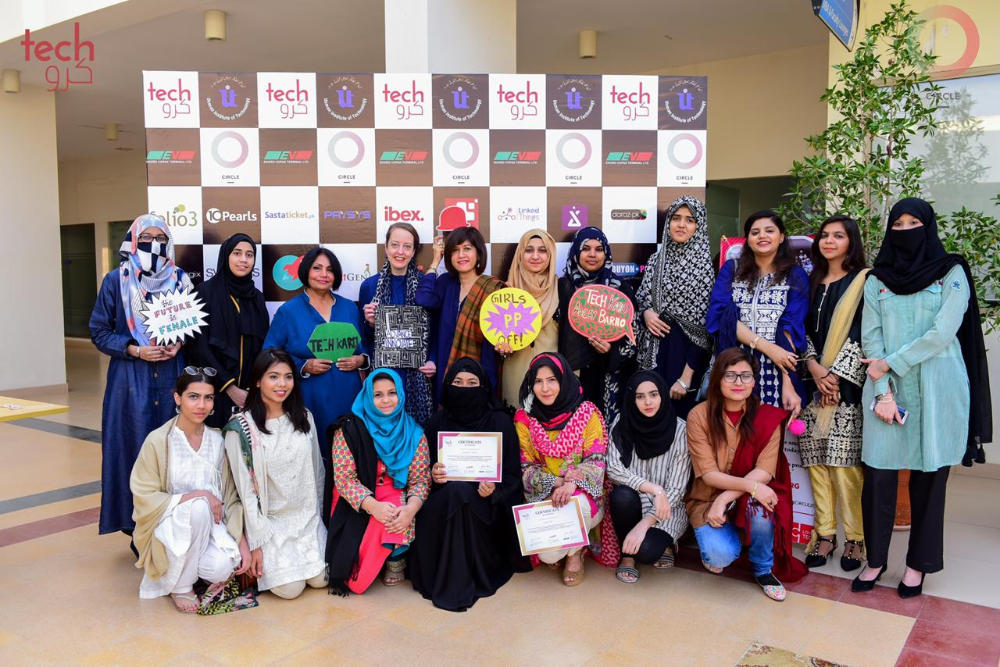
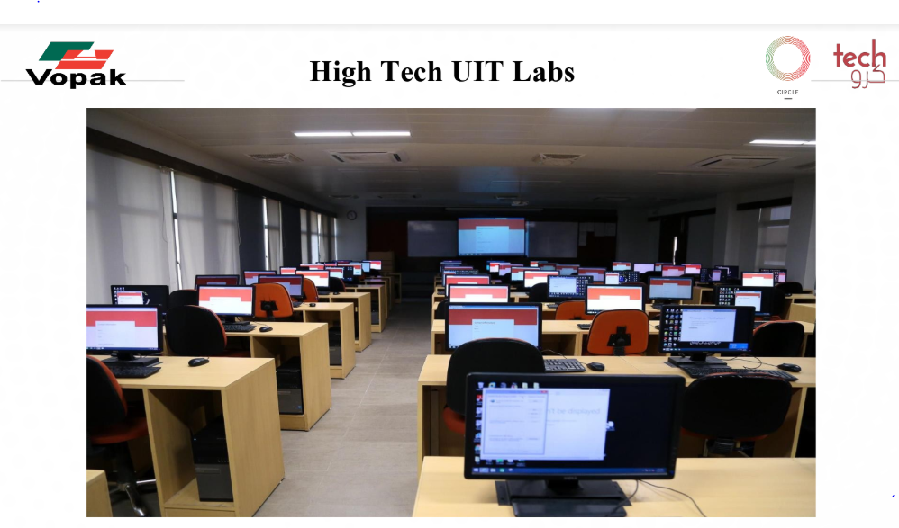

TECH KARO
ABOUT TECH KARO
CIRCLE firmly believes that investing in women is the smartest economic venture of today.
The World Economic Forum’s Global Gender Gap Index 2020 ranks Pakistan 151 out of 153 countries. In Pakistan, as high as 68% female graduates do not join the workforce and women who do enter the economy are underrepresented in senior management positions or on boards. Furthermore Pakistan has only 26% women in its formal work force which is one of the lowest in the region.
Women have been declining in the tech industry, worldwide. By 2043 at the current trend less than 1% of the global tech workforce will be female. In Pakistan, women represent only 14% of the IT workforce and 13% of IT managers (P@SHA, 2012).
To tackle the gender parity issue in the tech field and to create a pipeline of women in tech, CIRCLE has been running technological training for young girls from under served communities under the Tech Karo initiative. CIRCLE in collaboration with EngoVoPak, Engro Foundation and WeConnectFoundation has initiated #TechKaro, a program that brings technology, coding, web development, digital marketing and graphic design combined with life skills (discipline, resilience, problem solving, financial planning) to women to enable them to increase their livelihood, and generate positive impact for their families and communities.
TechKaro has two different divisions in Karachi, on in Gulshan-e-Iqbal in collaboration with Usman Institute of Technology and on in Lyari, in partnership with Lyari Girls Café
CODING AND WEB DEVELOPMENT (U.I.T.)
PLACEMENTS THROUGH TECH KARO:
2018 Cohort: 50 graduates,62% women, 30+ placed in jobs and internships
2019 Cohort(on-going):75 grads, 66% women, 38 internships placements and 5 freelancers
TECHKARO AT A GLANCE 2018-19
- In the past two years, CIRCLE in partnership with EngroVopak, Engro Foundation and WeConnect, has successfully completed three technological training programs whereby teaching tech and life skills
- FreeCodeCamp certifications were introduced to students, which is a globally recognized certification for Web Developers.
- 170 young girls and boys from underserved communities (65% female) and placing over 50% of the graduates in jobs and internships to enable them to increase their livelihood.
- 90% of the students were able to access a computer and an internet connection at home
- 40% of the non-CS students developed tech skills on video editing, graphic design and wordpress.
- 70% of the students hail from households with an income below 40k/month.
- 98% of the students said they will contribute towards their household income after being placed on completing the course.
OUR ADVISORS

|

|

|
|---|---|---|
| Jehan Ara, | Tania Aidrus | Mashhood Rastgar |
| Former President of PASHA | Google Singapore | CTO at Sastaticket.pk |